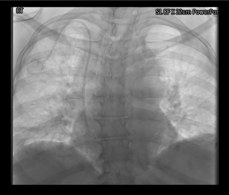

Indications / Contraindications
Indications
- Long-term intermittent chemotherapy — most common indication
- Long-term IV antibiotics or medications
- Frequent blood transfusions or blood draws
- Best for patients needing central access intermittently over months to years
- Port types — discuss with referring:
- Single lumen — standard; most chemotherapy regimens
- Double lumen — simultaneous incompatible infusions (lymphoma, TPN + chemo)
- Power-injectable — strongly preferred; future contrast CT universal in oncology; standard ports cannot power inject
- Size: larger for large patients (easier access); smallest for thin patients (prevents erosion)
- Chest port preferred over arm port — lower infection and thrombosis rates
Contraindications
- Absolute:
- INR >1.5 OR platelets <75,000 — stricter than CVL
- Systemic infection
- Bevacizumab (Avastin) within 14 days — wound dehiscence risk
- Relative:
- Prior radiation at access or pocket site (consider contralateral side)
- Known central vein occlusion
- Ipsilateral cardiac device
Pre-Procedure Checklist
Relevant Anatomy
Venous Access
- Right or left IJV strongly preferred — subclavian approach: 5–10% thrombosis vs. <1% for IJV; avoid subclavian for ports
- Puncture approximately 1 cm above the clavicle
- Too high → catheter kinking at the IJV–subclavian junction
- Too low → unnecessary difficulty and increased complication risk
Pocket Site
- Infraclavicular space midway between sternal notch and humeral head
- 8–12 cm from puncture site
- Depth ~1 cm subcutaneous — not sub-pectoral (too deep impairs palpation and needle access)
- Just large enough for the port — tight fit reduces migration
- Stay lateral to the midclavicular line to avoid pneumothorax during pocket creation
Tunnel and Tip Position
- Catheter tunneled subcutaneously from pocket to IJV puncture site
- Catheter cut to SVC–RA junction (cavoatrial junction) length
- Optimal tip: SVC–RA junction — too high → thrombosis; too low → arrhythmia
- Verify tip position fluoroscopically before closing pocket
How I Do It
Default RadCall approach + community cards
Port Placement
Steps
IJV Access
Wire Exchange and Catheter Length Measurement
Peel-Away Sheath Placement
Pocket Creation
Tunneling
Catheter Insertion Through Peel-Away Sheath
Confirm Port Function
Pocket Closure
Lock and Dressing

Troubleshooting
Peel-away sheath won't advance
Likely cause: Amplatz wire tip is in the RA rather than IVC, or insufficient dilation of the subcutaneous tract.
Next step: Confirm Amplatz wire tip is in the IVC — not the RA — under fluoroscopy before advancing the sheath. Dilate incrementally. Apply smooth forward pressure without torquing. Never force the sheath with the wire in the RA.
Pocket hematoma developing
Likely cause: Insufficient electrocautery hemostasis during pocket dissection.
Next step: Use electrocautery throughout pocket creation. Do not close over a hematoma — explore and irrigate until completely dry. Compression alone is inadequate for an expanding pocket hematoma.
Catheter length is off after cutting
Likely cause: Measurement error — most commonly failing to account for the peel-away sheath overhang length.
Next step: Recheck measurement technique. The peel-away sheath extends a fixed distance beyond the skin — this must be subtracted from the external landmark measurement. If cut too short, a new catheter will be needed.
Difficulty tunneling
Likely cause: Tunneling rod too deep (entering pectoralis), or insufficient local anesthesia along tunnel route.
Next step: Ensure tunneling rod stays superficial to pectoralis fascia throughout. Infiltrate generous local anesthetic along the full tunnel route before tunneling. Blunt finger dissection at the exit site facilitates emergence of the rod.
Complications
Early Complications
- Pocket hematoma (most common early) — prevention: meticulous electrocautery hemostasis throughout; management: compression; drainage if large or infected
- Wound dehiscence / necrosis — risk with bevacizumab or pocket too superficial or tight; management: wound care ± port removal
- Pneumothorax (SIR threshold 4% subclavian/jugular) — higher with subclavian approach; post-procedure CXR mandatory
- Air embolism — prevention: always occlude peel-away hub; never release catheter during sheath splitting
- Port flip / rotation — prevention: anchor through BOTH suture holes
- Central vein laceration (catastrophic) — prevention: confirm Amplatz wire tip in IVC before advancing peel-away sheath
Late Complications
- Infection / pocket cellulitis (3–7%) — IV antibiotics + port removal required for most port infections; antibiotic lock salvage rarely successful for ports (unlike tunneled catheters)
- Catheter pinch-off — subclavian approach; prevention: IJV or lateral clavicle approach
- Catheter fracture / embolism — rare; management: endovascular retrieval with snare
- Port erosion through skin — port too superficial or too large for thin patient
- Venous thrombosis (SIR threshold 8%) — subclavian 5–10%; IJV <1%
- Thrombotic occlusion — alteplase 2.5mg in 50cc NS dwell × 3h; if fails, image-guided catheter exchange
SIR Complication Thresholds — Subclavian / Jugular Approach (Dariushnia et al., JVIR 2010)
| Complication | Subclavian / Jugular |
|---|---|
| Wound dehiscence | 2% |
| Procedure-induced sepsis | 4% |
| Thrombosis | 8% |
| Pneumothorax | 4% |
| Hemothorax | 2% |
| Perforation | 2% |
| Hematoma | 4% |
SIR Success Rate Thresholds: IJV 95% · Subclavian 90%
Post-Procedure Care
Immediate
- CXR for tip position and pneumothorax before patient leaves
- Access port with 22g non-coring Huber needle; confirm aspiration and free flow
- Lock: 10mL saline + 5mL heparinized saline (300–500 units/mL)
- Sterile dressing over incision and Huber needle; change at 7 days
Follow-up and Patient Instructions
- First oncology use: typically 7–14 days (allow wound healing)
- Patient education: non-coring Huber needle only — regular needles core the septum and destroy port integrity
- Teach incision care and infection warning signs (redness, swelling, fever, drainage)
- Routine maintenance flush every 4–6 weeks between uses (institutional variation)
Critical Pearls
Port Access and Care
Accessing the Port
- Palpate the port to confirm orientation and position
- Topical anesthetic: EMLA cream 60 min prior if not urgent
- Sterile prep of access site
- Use ONLY non-coring Huber needle — regular needles core the septum and destroy port integrity over time
- Insert Huber needle perpendicular to the septum until firm backstop felt against the port base
- Confirm by aspirating blood before infusing
- Flush 10mL saline; if resistance encountered do not force — remove needle and reaccess
- Common gauges: 20–22g Huber; 22g for blood draws; 19–20g for power injection of contrast (confirm port is power-injectable before use)
Routine Maintenance and Troubleshooting
- After each use: Flush 10mL NS; lock with 5mL heparinized saline (300–500 units/mL)
- Maintenance flush: Every 4–6 weeks between uses (institutional variation)
- Thrombotic occlusion: Alteplase 2.5mg in 50cc NS dwell × 3h (1 attempt); if fails → image-guided catheter exchange or fibrin sheath stripping
- Port access failure: Check patient position (raise arm, rotate head); fluoroscopy for tip position and catheter course; TPA dwell for fibrin sheath
- Catheter fracture: Endovascular retrieval with snare — refer to IR urgently
- Port infection: Blood cultures × 2 (peripheral and through port); antibiotics; most require port removal for cure